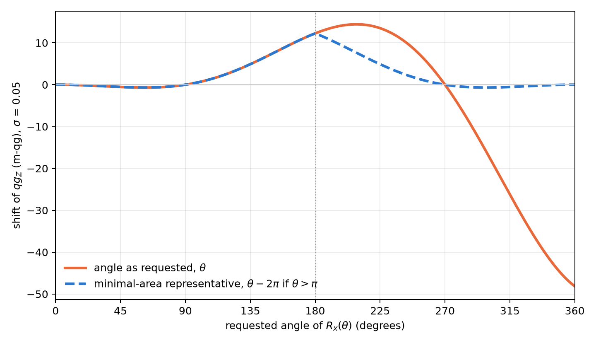

2 Native gates, closed algebra and the universal operator
Chapter 1 described the state of a qubit in qg units and reduced all its readings to a single probability, \(p_0\), with the milli-qang as the working scale. This chapter does the same for operations: how a state is prepared from its probability or its m-qg reading, how any single-qubit gate is written as an algebraic function of \(qg_Z\), why its action on the populations is the probability equation of Chapter 1, how the idea extends to systems with more levels, and which compilation rules follow when the error of a gate, measured in m-qg, depends on its angle.
2.1 The elementary gate \(R_{qg}\)
The basic operation is to prepare, from \(|0\rangle\), the state with polar bias \(q\): a rotation \(R_y(\theta)\) with \(\theta=\arccos q\). qang provides it as a native gate in the three most widely used development kits (§6):
- Qiskit:
RQangGate(q)andFullRQangGate(q, φ), the latter with the azimuthal phase. - Cirq:
rqang_gate(q), built oncirq.ry, andfull_rqang_gate(q, φ), aMatrixGatewith the same convention as Qiskit’sUgate. - PennyLane: the same pair, differentiable with respect to \(q\).
By the probability equation (Section 1.3), the gate parameter can be set from any of the readings: for a probability \(p_0\) use \(q=2p_0-1\), and for a reading of \(m\) m-qg, \(q=m/1000\). Asking for \(p_0=0.75\) or for \(+500\) m-qg is asking for the same gate, \(R_y(60^\circ)\).
All three prepare exactly the same state for the same qg value, which is checked both on the measured probabilities and on the state-vector fidelity. The gate accepts symbolic parameters (Qiskit Parameter, sympy symbols), so it can sit inside parameterized circuits.
A signed variant, SignedRQangGate, applies \(R_y(s\cdot\arccos q)\) with \(s=\pm1\): it is the gate form of the branch sign of Chapter 1, and prepares the same state as the full gate with \(\varphi=0\) or \(\pi\) (§68).
2.2 The universal operator in qg
Every single-qubit gate is, up to a global phase, \(U(\theta,\varphi,\lambda)\). With \(q=\cos\theta\) the half-angles become algebraic,
\[ \cos\frac{\theta}{2}=\sqrt{\frac{1+q}{2}},\qquad \sin\frac{\theta}{2}=\sqrt{\frac{1-q}{2}}, \]
and the universal gate is written without trigonometric functions of \(q\):
\[ U_3^{qg}(q,\varphi,\lambda)= \begin{pmatrix} \sqrt{\dfrac{1+q}{2}} & -e^{i\lambda}\sqrt{\dfrac{1-q}{2}}\\[2ex] e^{i\varphi}\sqrt{\dfrac{1-q}{2}} & e^{i(\varphi+\lambda)}\sqrt{\dfrac{1+q}{2}} \end{pmatrix}. \]
The amplitudes depend on the polar bias only, and the phases are decoupled into the factors \(e^{i\varphi}\) and \(e^{i\lambda}\). An immediate consequence is the transition matrix, the probabilities \(|U_{ij}|^2\):
\[ T(q)=\begin{pmatrix}\tfrac{1+q}{2}&\tfrac{1-q}{2}\\[0.5ex]\tfrac{1-q}{2}&\tfrac{1+q}{2}\end{pmatrix}, \]
doubly stochastic, rational in \(q\) and independent of the phases. Seen from a measurement in the computational basis, every single-qubit gate is a binary symmetric channel with parameter \((1-q)/2\).
2.3 The gate as a probability equation
The transition matrix is Chapter 1’s probability equation written for an operation. With \(p_0=(1+q)/2\),
\[ T=\begin{pmatrix}p_0&1-p_0\\1-p_0&p_0\end{pmatrix},\qquad p_0=\frac{1000+m}{2000}: \]
the action of any single-qubit gate on the populations is fixed by a single number, its reading in m-qg. The identity and \(Z\) sit at \(+1000\) m-qg (they do not move populations), \(X\) at \(-1000\) (it swaps them) and the Hadamard at \(0\) (it equalizes them). The phases \(\varphi\) and \(\lambda\) do not appear: they are invisible to a \(Z\) measurement and only show up when gates are composed, as Chapter 3 shows.
The entropic reading has its version for operations too. The capacity of the binary symmetric channel with parameter \((1-q)/2\) is \(1-H\big((1-q)/2\big)\), and since \(H\) is symmetric, \(H\big((1-q)/2\big)=H(p_0)=qg_S\):
\[ C = 1-qg_S . \]
A gate at a pole (\(qg_S=0\)) carries one full bit per use; the Hadamard (\(qg_S=1\)) carries nothing from the computational basis to itself.
2.4 Verification against standard libraries
The formula was checked against Qiskit’s U gate on 2000 random gates, with a largest difference of \(3.5\times10^{-14}\) (§166). The usual gates appear at simple values:
| gate | \(q\) | m-qg | \(\varphi\) | \(\lambda\) |
|---|---|---|---|---|
| \(I\) | \(1\) | \(+1000\) | \(0\) | \(0\) |
| \(X\) | \(-1\) | \(-1000\) | \(0\) | \(\pi\) |
| \(Z\) | \(1\) | \(+1000\) | \(0\) | \(\pi\) |
| \(H\) | \(0\) | \(0\) | \(0\) | \(\pi\) |
The table reads in qg: \(X\) is the only case with bias \(-1\) (it flips the qubit), \(Z\) and the identity do not change the populations (\(q=1\)) and differ only by a phase, and the Hadamard takes the qubit to the equator (\(q=0\)).
2.5 Beyond the qubit: the Cartan subalgebra
For a \(d\)-level system (a qudit), the analogue of \(\sigma_z\) is not one matrix but the Cartan subalgebra of \(\mathfrak{su}(d)\): the \(d-1\) diagonal generalized Gell-Mann matrices,
\[ \lambda_k=\sqrt{\frac{2}{k(k+1)}}\;\operatorname{diag}(\underbrace{1,\dots,1}_{k},-k,0,\dots,0),\qquad k=1,\dots,d-1, \]
normalized so that \(\operatorname{Tr}(\lambda_j\lambda_k)=2\delta_{jk}\). Their expectation values are linear in the populations and determine them:
\[ p=\frac1d+\frac12\sum_{k=1}^{d-1}\langle\lambda_k\rangle\,\operatorname{diag}(\lambda_k). \]
For \(d=2\) a single matrix remains, \(\lambda_1=\sigma_z\), its expectation value is \(qg_Z\) and the formula reduces to \(p_0=\tfrac12+\tfrac12\,qg_Z\): the probability equation of Chapter 1. This is the natural generalization of the unit: a vector of \(d-1\) qg values measurable in the computational basis, each expressible in m-qg, which fixes the \(d\) probabilities the way \(qg_Z\) fixes \(p_0\) (§166).
Definition and usefulness should be kept apart. Whether a three-level readout gives qang an advantage was asked on a concrete case, a transmon leaking to the level \(|2\rangle\) in a surface-code memory, and the answer was no: reading \(|2\rangle\) as 1 is usually right, and declaring the qubit erased discards that information (§70). qang remains a qubit construction; the qudit generalization is an identity, not a demonstrated advantage.
2.6 The minimal pulse-area principle
On devices with fractional gates (rotations \(R_X(\theta)\) or \(R_{ZZ}(\theta)\) with a continuous angle), the pulse area grows with \(|\theta|\), and so do the amplitude-miscalibration error and the relaxation during the pulse. In qg units, a random amplitude error of standard deviation \(\sigma\) damps the read-out as
\[ qg_Z=\cos\theta\;e^{-\theta^2\sigma^2/2}, \]
and a fixed one \(\varepsilon\) gives \(\cos(\theta(1+\varepsilon))\), with first-order error \(1000\,\varepsilon\,\theta\sin\theta\) m-qg. The sensitivity \(d\,qg_Z/d\theta=-\sin\theta\) is largest at \(\pi/2\) and vanishes to first order at \(0\) and \(\pi\) (§160). This is Chapter 1’s milli-qang error budget (Figure 1.4), and the scale makes the gate error comparable with the shot noise of the read-out: with \(\sigma=0.05\), the shift of an \(X\) (12.3 m-qg) is of the order of the resolution of \(10^4\) shots on the equator (10 m-qg).
Every gate has shorter representatives. \(R_X(\theta)=-R_X(\theta-2\pi)\) has period \(2\pi\) up to a global phase, and Figure 2.1 shows what is gained: asking for \(R_X(324^\circ)\) as is shifts the reading by \(-31.7\) m-qg, while its representative \(R_X(-36^\circ)\), the same gate, shifts it by \(-0.4\) m-qg.

More interesting: \(R_{ZZ}(\theta+\pi)=R_{ZZ}(\theta)\,(-i\,Z\otimes Z)\), and \(Z\otimes Z\) is two virtual \(R_Z(\pi)\) rotations, free on superconducting processors. So \(R_{ZZ}\) has period \(\pi\) and its area never needs to exceed \(\pi/2\). The function minimal_area_circuit rewrites a circuit with those representatives and preserves the unitary exactly, global phase included.
On a 4-qubit QAOA model with errors proportional to the area (150 instances), reducing the angles modulo \(2\pi\) cut the total area 4.4× and the error (total variation distance) 4.1×; using the period \(\pi\) of \(R_{ZZ}\) as well cut it another 1.14×. The recorded prediction was 1.5× and it failed: half of the area, that of the \(R_X\) rotations, was already minimal after the first reduction. The general result stands: the error follows the area. Two scope notes: on IBM processors ordinary single-qubit rotations are virtual \(R_Z\) plus fixed \(\sqrt X\) pulses, of duration independent of the angle, so the rule applies to fractional gates; and the benefit depends on how strongly the error scales with the area on each platform.
2.7 An exposure screen before running
The symmetry filter (Chapters 20–21) discards the shots that left the conserved Hamming-weight sector. But a decay that happens while part of the state is outside the sector can rotate back in and pass the filter. That suggests a prior measure, computable without noise: the exposure, the population outside the sector right after each two-qubit gate (qang.sectors.sector_exposure).
Over 16 compilations of one step of an XXZ chain, the rank correlation between exposure and T1 leak was exactly 0.80, the recorded threshold, and the zero-exposure compilations removed at least 98% of the T1 error (§68):
| compilation | exposure | T1 leak |
|---|---|---|
| 3 CNOT | 0.42 | 16–52% |
| Mølmer–Sørensen, ZZ by basis change | 0.16–0.24 | 20–78% |
| Mølmer–Sørensen rotations | 0.0006–0.047 | 0.4–17% |
| number-conserving | 0 | 0.0–2.0% |
The screen ranks compilations, not time steps: within one compilation the relation is weaker. Its practical value is choosing the compilation before spending shots.
2.8 One qubit order for every kit
A practical detail that causes silent errors: Qiskit writes qubit 0 at the right of the bitstring, while Cirq, PennyLane, Braket and pytket put it first. qang.interop converts any result to \(\{(b_0,\dots,b_{n-1}):\text{count}\}\) and computes the qg read-outs on that form: per-qubit \(qg_Z\) with its error, the filter and the register entropy (§130). A 3-qubit W state sampled with 20 000 shots in each kit gave \(qg_Z\) between 0.316 and 0.343 (ideal \(1/3\)), all shots in weight 1 and register entropy 0.528 (ideal \(\log_2 3/3\)), alike in all three. In milli-qang the readings run from 316 to 343 m-qg against 333 ideal; with 20 000 shots the resolution is \(\sigma_m=1000\sin\theta/\sqrt N=6.7\) m-qg, so the largest deviation (\(-17\) m-qg) sits at about 2.6σ: it is shot noise, not a difference between kits.
2.9 Without qang and with qang
| action | without qang | with qang | difference |
|---|---|---|---|
| prepare a state with a given probability | compute \(\theta=2\arccos\sqrt{p_0}\) and apply \(R_Y(\theta)\) | the \(R_{qg}\) gate takes the target reading directly, in qg or m-qg | convenience: the physical gate is the same |
| describe a gate’s action on populations | the full unitary, with phases | a doubly stochastic transition matrix set by one number in m-qg, with capacity \(1-qg_S\) | in favour for populations; against for phases, which the description loses (Chapter 3) |
| budget the error of a fractional gate | process fidelity | error in m-qg: from \(-31.7\) to \(-0.4\) m-qg for \(R_X(324^\circ)\) with the minimum-area representative | the improvement is the minimum-area principle’s; m-qg makes it comparable with shot noise |
| generalize to qudits | Gell-Mann matrices | the Cartan subalgebra as a qg identity | none shown: no advantage of reading more levels was found |
Balance. For gates, qang is a compact way of writing what happens to the populations, and m-qg is the unit in which pulse error and shot noise are compared. The measured gain, the minimum area one, belongs to the physical principle, not to the unit.
2.10 In code
import math
from qang import algebra, probability, pulse_area
U = algebra.u3_qang(0.0, 0.0, math.pi) # the Hadamard as the point (q, φ, λ) = (0, 0, π)
algebra.transition_matrix(0.3) # [[0.65, 0.35], [0.35, 0.65]]: p0 = 0.65, +300 m-qg
algebra.cartan_values([0.5, 0.3, 0.2]) # the two qg values of a qutrit
pulse_area.minimal_area_angle(3.5, math.pi) # (0.358, 1): RZZ(3.5) = RZZ(0.358) · (Z ⊗ Z) · phase
pulse_area.rx_qg_z_random_amplitude(math.pi, 0.05) # -0.988 instead of -1
probability.pulse_error_milliqang(math.pi, 0.05) # 12.3 m-qg of error on an X2.11 Summary
- Preparation by polar bias is native in Qiskit, Cirq and PennyLane, with the same convention and a signed variant.
- Every single-qubit gate is an algebraic function of \(q=qg_Z\) and two phases; its transition matrix is doubly stochastic, does not depend on the phases and is the probability equation of Chapter 1: a single m-qg number fixes its action on the populations, and the channel capacity is \(1-qg_S\).
- The Cartan subalgebra of \(\mathfrak{su}(d)\) generalizes \(qg_Z\) to qudits as an identity; no advantage of a multi-level readout was shown.
- In fractional gates the error follows the pulse area; choosing the shortest representative reduces it (from \(-31.7\) to \(-0.4\) m-qg for \(R_X(324^\circ)\)), and the budget is stated in m-qg, the same scale as the shot noise.
- The exposure outside the sector, computed without noise, ranks compilations by how much T1 the filter will let through.